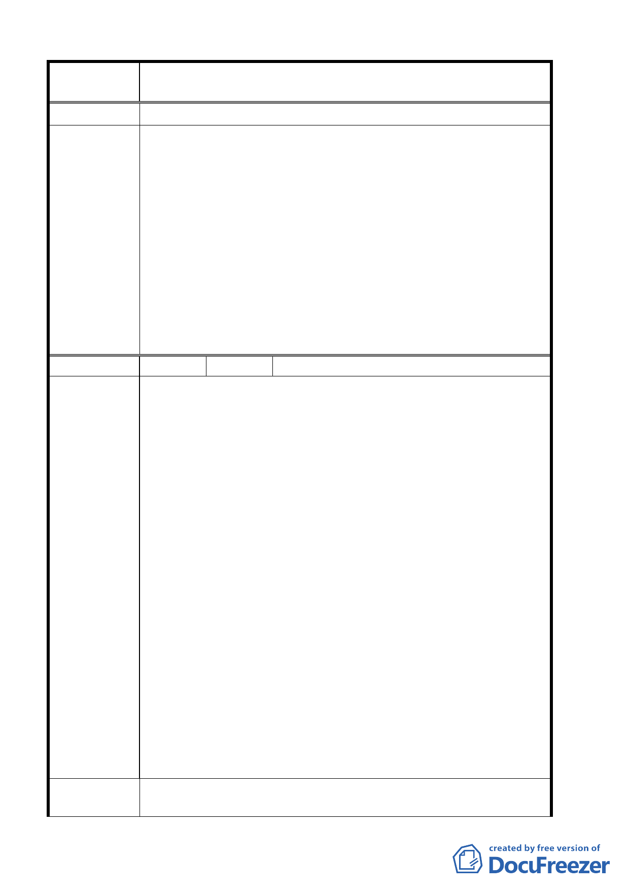

案 名 臺北市北投區都市計畫通盤檢討案（主要計畫）案
站及國中用地應退縮四公尺並加以綠化。
一、本案依細部部計畫政十三同意變更公園用地、特定觀光商
業專用區變更為水利設施用地。
二、由於本次通盤檢討係以北投區為範圍，面積十分廣大，故
公開展覽未涉及變更地點之計畫圖則未列印。工務局陳情
地點，係位於前述未變更地點，但此部分並不影響原都市
委員會議
計畫效力。
決 議 三、同意依專案小組審查結論辦理。
四、由於本次通盤檢討係以北投區為範圍，面積十分廣大，故
公開展覽未涉及變更地點之計畫圖則未列印。工務局陳情
地點，係位於前述未變更地點，但此部分並不影響原都市
計畫效力。
五、同意依專案小組審查結論辦理。
編 號 ３ 陳情人 蔡明德
陳情位置：北投區行義段二小段 645、661 地號土地
陳情理由：
一、陳情土地夾雜在住宅聚落群房中，編定為保護區甚為不合
理：前項土地目前都市計畫編定為保護區，然其北、東、
南側相鄰土地，皆已興建住宅房屋使用多年，僅留此一空
地夾雜住宅聚落群房中，形成特殊怪異景象；且陳情建議
變更使用分區之土地高度再海拔五 O 公尺以下、地勢平緩、
地質堅固、土壤貧瘠、周邊亦無軍事管制；其交通與行義
路緊鄰，屬榮總生活圈範圍內。因此該使用編定仍為保護
陳情理由
區，不僅不合理，亦未能符合實際。
二、政府早已規劃該地區作為住宅使用：另上開土地在陽明山
管理局改制前即已屬都市計畫公共設施完竣地區；且在民
國五十九年間政府即將上開土地內道路系統完成地籍逕為
分割，尤有甚者在民國六十年六月當時更曾通知該地區的
土地所有權人限期建築使用；台北市政府亦曾於民國六十
三年七月「北投區石牌櫻花崗細部計畫案」公展時擬變更
為住宅區，後因需俟主要計畫通盤檢討而未予變更其迄
今。就諸多事實而言，上開土地顯應作為住宅區之使用為
宜。
建議辦法
應該將建議位置保護區變更為住宅區，以期望能地盡其利，並
符合當地發展現況。
第 6 頁，共 49 頁